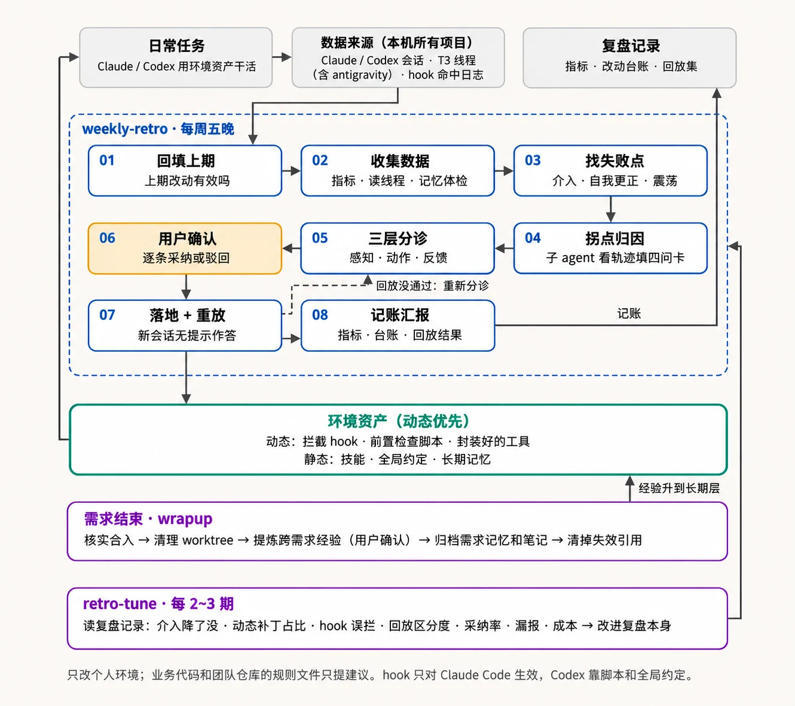

rstack — 把 AI 编程环境做成自进化系统
Claude 想清楚、写契约、做决策；Codex 看清楚、跑侦察、按契约施工。配合每周复盘扫描全量会话与反事实重放，把一次次口头纠错下沉成下次必经的环境资产。
--help / 千次调用（36.4 → 16.2）
- 双 Agent 分工
- Claude（主管）拍板、写七栏契约、做对外写操作；Codex（gpt-6.1-sol）侦察、施工与 E2E
- 复盘三层节奏
- 需求级
wrapup· 周度主力weekly-retro（八步闭环）· 每 2 期元调优retro-tune - 核心组件
claude-lead+weekly-retro技能、2 枚 Claude Code hook、Python/Bash 台账与回放脚本- 设计信条
- 主上下文最贵，只用来思考决策；怪环境不怪模型，动态补丁优先于静态文档

点击放大原图weekly-retro 八步闭环 → 动态优先沉淀环境资产。
FIG 01 // OVERVIEW
展开本页目录
把主会话当苦力，和靠口头一次性纠错，都会让环境越用越重。
拉完自己的真实会话账单后，发现两个反复发生的结构性痛点：第一，主会话开销的大头不是输出，而是上下文滚大后的缓存读（占等效开销约 80%）——读代码占 ~40%、只读查询 ~15%、构建测试 ~20%，真正改文件只有个位数；第二，窗口里纠错一次只活在那个窗口，换个任务照样踩坑。
Claude 想清楚，Codex 看清楚：把最贵的主上下文留给决策。
Claude（Tech Lead）
负责判断、和用户拍板、写七栏契约、复核 diff 与测试证据，以及执行部署、发版、改 TCC 配置等高风险对外写操作。
Codex（gpt-6.1-sol）
负责所有大上下文重活：多文件侦察并带证据回简报、按契约施工并过单测、部署后按 e2e-record 留存验收证据。
 点击放大原图
点击放大原图
RESUME）或沿用任务 ID 返工（TASK），两轮不达标立即熔断。
FIG 02 // CLAUDE-LEAD
标准六步流水线
-
STEP 01 · 触发判断
盯任务类型（排查、盘点、读长方案、跨模块找调用方）而非让模型估工作量；连续只读达阈值（默认
25次）时，posttool_delegate_nudge.py自动注入委派提醒。 -
STEP 02 · 侦察
独立子问题并行派给 Codex，停止条件写到要回答的层级；有缺口直接续派原会话追问，不污染主会话。
-
STEP 03 · 拍板与七栏契约
先和用户敲定取舍，再写十几行简短契约；工作区快照与固定约束由
dispatch.sh自动拼装。 -
STEP 04–06 · 施工、复核与记账
Codex 按契约写码并跑单测与 E2E；主管复核 diff 与证据，通过
ledger.py记台账（手修必加--hand-fixed）；同一任务两轮返工仍不达标立刻熔断停手。
派发给 Codex 的七栏简短契约
由 dispatch.sh 自动拼装信封01 硬不变量业务规则、接口契约、已拍板取舍——对不上必停
02 行为范围按行为写，不按文件清单写
03 业务风险只写执行者从代码里看不出来的业务红线
04 未决口径尚未拍板的取舍点，遇到即停
05 待核假设主管未亲手验证过的外部行为或环境规则
06 现场自决迁移编号、命名等机械事实按仓库现状自定
07 已知已核实事实、相关 ID、已跑通工具与排查方向
把每一次踩坑，从窗口下沉到下次必经的环境资产。
把本机 Claude 会话、Codex 会话、T3 线程（按需补 antigravity）和 hook 命中日志接入三层维护节奏：需求级 wrapup、每周五晚主力 weekly-retro，以及每 2 期一次、专门改进复盘本身的 retro-tune。
 点击放大原图
点击放大原图
weekly-retro 八步闭环：回填旧账 → 扫会话 → 捞 5 类失败点 → 拐点四问卡 → 三层分诊 → 人拍板 → 反事实重放 → 记账。
FIG 03 // WEEKLY-RETRO
turns.tsv；每条采纳的补丁必须过 replay.py 全新无头只读会话的反事实重放验收，没过直接打回重分诊。
三层分诊与动态优先补丁矩阵
| 问题分层 | 典型症状 | 动态补丁（优先） | 静态补丁（兜底） |
|---|---|---|---|
| 感知层 | 不知规则、找不到入口、被长输出淹没 | 前置检查脚本：一次输出关键事实并截断过滤 | 技能描述、全局约定、入口地图、状态记忆 |
| 动作层 | 工具不会用、参数常错、多步连招繁琐 | 封装短命令脚本（如 xapi、lane_wait） |
速查技能（如 xagent-ops-cli） |
| 反馈层 | 走错了不知道、报错看不懂、最后才爆雷 | hook 当场拦截并给修复提示 | 沉淀为 feedback / reference 记忆 |
跨 Agent 边界：hook 只对 Claude Code 生效；同时影响 Codex 的问题必须优先做成共享脚本或前置检查脚本。
不靠体感：连续四期跨期比率与资产健康度追踪。
从 2026-11-07 起连续追踪 4 期（W45 → W46 → W46b → W47）。因每周任务量差几倍，所有指标一律按比率对比（越低越好）：介入类按每百条用户消息，工具类按每千次工具调用。W46b 起介入类由正则预标注升级为人工通读判读。
 点击放大原图
点击放大原图
| 观测指标 | 口径 | W45 → W46 → W46b → W47 | 状态 | 归因解读 |
|---|---|---|---|---|
查 --help |
/ 千次调用 | 36.4 → 20.1 → 24.8 → 16.2 |
↓ 55% | 速查技能 + xapi / lane_wait 封装直接减噪 |
| 被拦（权限/安全） | / 千次调用 | 3.2 → 0.7 → 0.4 → 0.7 |
↓ 78% | 稳定在极低水位，越界操作大幅减少 |
| 空确认 | / 百条消息 | 1.4 → 6.0 → 1.2 → 1.3 |
改善 | W46 修订「何时停下问」全局约定后稳住 |
| 追问进度、卡顿 | / 百条消息 | 0.7 → 2.4 → 1.8 → 1.1 |
回落 | W46 冲高后收敛，过程可见度改善 |
| 纠正类介入 | / 百条消息 | 2.5 → 3.9 → 3.6 → 2.5 |
持平 | W46b 起改人工判读，前两期正则偏低 |
| 自我更正 | / 千次调用 | 8.0 → 2.6 → 4.4 → 7.7 |
反弹 | W47 含约 5 条正则误标，纳入元调优修口径 |
| 工具报错 | / 千次调用 | 11.2 → 10.0 → 12.0 → 20.2 |
上升 | 主要来自 W47 密集开发 lark-channel 与 t3code |
回放通过率 3 / 3
W47 补丁前基线全失败，补丁落地后全新无头会话 100% 通过，验证改动真实有效。
封装真实采用
W47 ops-cli 被调用 351 次居首；同步监控专用工具占比 tool_share。
主动做减法
连续 3 期零真实命中的 hook 自动提议删除；记忆索引从 13979 → 15500 字节，已入瘦身清单。
目录结构、安装与日常命令速查。
# 软链安装技能到 ~/.claude/skills 和 ~/.codex/skills（已有同名自动跳过）
bash install.sh
# 可选：幂等合并 PreToolUse 守卫与委派提醒 hook（修改前自动备份）
bash install.sh --hooks# 新派任务（后台运行等通知，不轮询）
"$DG/dispatch.sh" <workdir> <brief.md> <结论|代码> <标签>
# 续派同一 codex 会话（只写增量）
RESUME=<task_id|run目录> "$DG/dispatch.sh" - <brief.md>
# 复核记账（手修过必加 --hand-fixed）
"$DG/ledger.py" note <run目录> --verdict <pass|partial|fail|stop> \
[--cause <原因>] [--gap <契约缺口>] [--hand-fixed] --level <低|中|高> \
--task "<任务简述>" --comment "<复核结论>"
# 查看统计、效率与委派阈值回放
"$DG/ledger.py" stats --since <YYYY-MM-DD>
"$DG/timing.py" --since <YYYY-MM-DD>python3 -I "$WR/scripts/tune_due.py"
python3 -I "$WR/scripts/scan.py" --since <起点> --until <终点>
python3 -I "$WR/scripts/turn.py" '<会话标识>|<月-日 时:分>|<关键词>'
python3 -I "$WR/scripts/replay.py" --out <本期目录> --only <题号>数据与隐私边界
- 复盘报告、
metrics.jsonl与replays/*.json落在本地$RETRO_DIR（默认~/notes/retro），写回放题前先脱敏凭证。 - 派发产物落
~/.local/share/agent-delegate/runs/；hook 日志仅记规则名、决策与会话 ID，不保存命令原文。
三条实践护栏
- 每期补丁上限 5 条且逐条人拍板；只改个人环境，团队仓库规则只提建议。
- 持续做减法：零命中 3 期的 hook 删、长期 100% 通过的回放题降频、记忆定期瘦身。
- 别把我的阈值当教条，按自己的
timing.py与metrics.jsonl调校。
专有名词速查表
- rstack
- 个人本地 AI 工程环境资产仓，汇总
claude-lead、weekly-retro技能、脚本、全局约定与 hook。 - Claude / Codex（gpt-6.1-sol）
- 双 Agent 组合：前者负责判断、写契约、复核与对外写操作，后者负责侦察、施工与单测/E2E。
- claude-lead / weekly-retro / wrapup / retro-tune
- 四块协作流程，覆盖日常委派、每周五晚复盘、需求收尾与每两期一次的复盘元评估。
- dispatch.sh / ledger.py / timing.py
claude-lead配套脚本：拼装信封并后台派发、记录台账、分析派发时机与提醒阈值。- scan.py / turn.py / replay.py / tune_due.py
weekly-retro脚本：扫描会话出指标与turns.tsv、回看拐点、无头反事实重放与元评估计时。- pretool_guard.py / posttool_delegate_nudge.py
- 两枚 Claude Code hook：高风险命令拦截守卫（支持
# retro-selftest）与连续只读委派提醒。 - xapi / lane_wait
- 动作层动态补丁代表：把高频多步命令压成一条短命令，显著降低查
--help频次。 - xagent-ops-cli（ops-cli）
- 动作层静态速查技能，沉淀已验证操作写法，W47 以 351 次调用居技能榜首。
- e2e-record
- 端到端验证规范，指导 Codex 在部署后调接口、查库、看页面并留存验收证据。
- TCC
- 外部配置中心；改配置与部署发版同属高风险对外写操作，约定由主管执行。
- T3 线程 / antigravity / t3code / lark-channel
- 本机多工具线程来源与日常开发项（
t3code、lark-channel为 W47 密集开发项目）。
Media to Notes — 长音视频图文笔记插件 →
六步受控状态机开源 Agent Skill：按板书转折精选截图，附 34 分钟 Transformer 课程 32 张板书对齐样例。